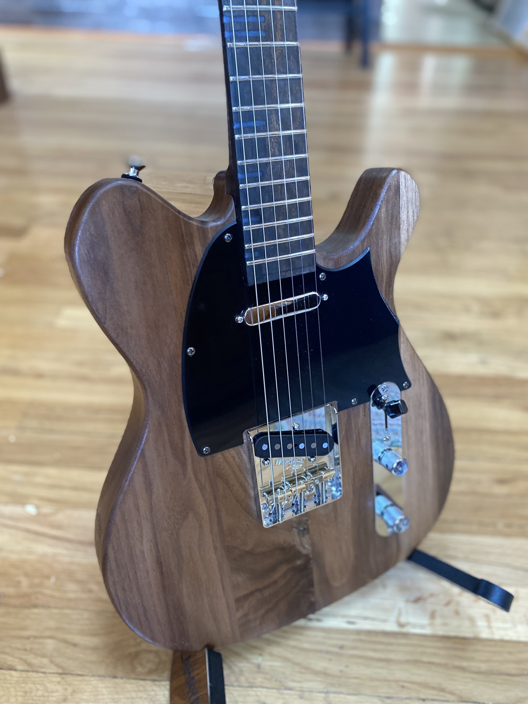
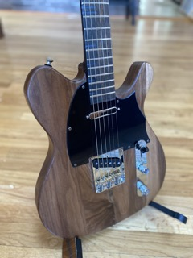
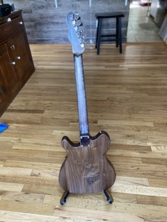

Dorweiler custom build
A Telecaster-style build with figured walnut body, ebony fretboard, and a single coil/humbucker pickup configuration.
I love working with walnut - it has these rich, warm brown tones with natural grain patterns that don't need much help to look incredible. This figured piece had particularly striking movement, so I kept the finish natural and satin to let it breathe. The pickup configuration is a twist on the classic Tele setup: single coil at the bridge for that signature twang, but a humbucker at the neck for added versatility and modern tones. It keeps the Tele DNA while opening up more sonic territory.
I can create a Dorweiler Telecaster-style build with figured woods and your choice of hardware. Let's discuss your vision.
Learn About Commissions